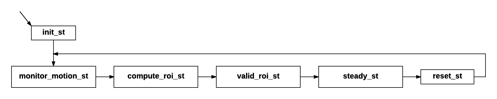

Software Setup Guide
This is the step-by-step guide on building the cribsense software on Ubuntu.
Prerequisites
This software depends on autoconf, OpenCV and libcanberra. Install these by running
sudo apt-get install git build-essential autoconf libopencv-dev libcanberra-dev
Build
To build the software, navigate to the root of the repository directory and run
./autogen.sh --prefix=/usr --sysconfdir=/etc --disable-debug
make
sudo make install
sudo systemctl daemon-reload
To start the program in the background:
sudo systemctl start cribsense
To run it in the foreground:
cribsense --config /etc/cribsense/config.ini
To start the program automatically at every boot:
sudo systemctl enable cribsense
To stop cribsense from automatically running at boot:
sudo systemctl disable cribsense
Note that when cribsense is started using systemctl, the config parameters are already sent and are stored in /etc/systemd/system/cribsense.service
Software Configuration
CribSense customizable through a simple INI configuration file. After running make install, the configuration file is located at:
sudo nano /etc/cribsense/config.ini
TODO: Detail what each of the configuration parameters does.
TODO: Link to video describing the calibration process.
Software Architecture Details
The software for processing a video stream is implemented as a state machine that cycles as shown below. There are currently six states that manage all of our processing steps. Our state machine logic is called each time a new frame is read from the camera.

Initialization
When the video stream first turns on, it is common to have a flash of white or black pixels that looks like a lot of motion is happening. This state simply initializes the video magnification and motion detection code, and skips a few of the first frames before jumping into monitoring motion.
Monitoring Motion
In this state, the full 640 x 480 frame is magnified, and uses an image differential algorithm from Collins et al. to calculate the motion pixels between frames. The output of this algorithm is a black and white image where white pixels indicate pixels that have changed. These black and white images are then bitwise ORed together for several frames to accumulate the motion seen over the period of time.
Computing a Region of Interest
With the accumulated black and white frame representing the motion seen over several frames, the image is eroded slightly to eliminate noise, then significantly dilated to highlight the areas with the most motion. Dilation is necessary to merge discrete points into continuous regions of motion. Because of the large dilation, it is then easy to find the largest contour in the black and white image, which represents the main source of motion, and draw a bounding box around the contour. It is in this portion of code that we can set bounds on the size of the crop.
Steady State
This is where our software spends most of its time. In this state, the software is operating on cropped frames. Video magnification is performed and a measure of the movement seen in the frame is calculated. In this state, we are able to process at a fast enough rate to catch up with any delay caused during the processing of full frames, and keep up with our 10fps video stream.
Periodic Reset
Because the baby may move occasionally, we periodically reset the video magnification and cropping so that we have full-resolution frames available to repeat the process of monitoring motion and finding a new region of interest. All of these timing parameters are easily configurable.
Technical Challenges
Speed
When we started this project, our C++ implementation could magnify video at a rate of 394,000 pixels per second on the Raspberry Pi 3. For reference, this meant our code could only process a 640 x 480 video stream at a rate of approximately 1.3 frames per second. Optimizing our code to handle the real-time goal was our primary objective and challenge, since we needed a 10x speed-up to handle at least 10 frames per second. Now, we are able to process over 1,200,000 pixels per second, and use additional cropping to process a 10 fps video stream in real time. We used three main optimizations increase performance by 10x: (1) multithreading, (2) adaptive cropping, and (3) compiler optimization. Each optimization is explained in more detail below.
Multithreading (~3x)
One intuitive and high-value optimization was to process sections of each video frame in parallel. To do so, we divide each frame vertically, such that each section's height is one-third of the original frame. Then, each section is magnified as if it was its own video stream. The resulting magnified frames are then joined together to form a full-resolution frame before evaluating the frame for motion. This optimization alone brought our processing rate to 938,000 pixels per second (roughly a 3x improvement). Three of the Raspberry Pi's four cores are dedicated to video magnification, while the 4th core handles control flow and motion processing.
Adaptive Cropping (~3x)
While multithreading sought to increase the number of pixels we could process each second, adaptive cropping sought to decrease the number of pixels we needed to process. We rely on two main assumptions for this optimization. First, the camera captures the entire crib in its field of view and the baby is the only source of movement in the frame. Second, the camera is placed such that movement is discernible, and the region of interest is not larger than one-third of the frame. With these assumptions, we are able to periodically monitor a full frame to determine where the motion is occurring, then crop down the stream to only contain the relevant motion. By reducing the number of pixels that we process in our steady state, and amortizing the cost of monitoring a few full-resolution frames, we are able to increase the number of frames we can handle each second by about 3x.
Compiler Optimizations (~1.5x)
Finally, in order to reach our goal of over 10x speedup, we were able to make some code optimizations and utilize additional compiler flags. In particular, we make use of the -O3 optimization level, and we force the compiler to generate vector instructions with -ftree-vectorize and -mfpu=crypto-neon-fp-armv8. Additionally, we were required to add the -funsafe-math-optimization flag to enable the vector float generation, because NEON instructions are not IEEE compliant and gcc would not generate them otherwise. We found two major challenges in enabling compiler optimization. The first was to expose the operations to the compiler. The most expensive part of transformation happens in two all-pixel loops, but previously each operation in the loop was implemented with an opencv call that would run the operation over all pixels. We rewrote the code to pull out the loop and avoid intermediate copies. On an x86-64 machine, this is already an improvement, because of larger caches and the fact that the compiler always issues at least SSE2 vector instructions. In contrast, the switch from vector instruction enabled opencv to straight C++ code resulted in worse performance on the Pi. We recovered this performance drop by adding the compiler flags, but we encountered toolchain problems. The Pi 3 has an ARM Cortex A53 processor, which is an A-class 64-bit ARMv8 with NEON and crypto extensions, but it runs a 32-bit OS compiled for ARMv7. We found first that compiling with -march=native exposes a known but yet unfixed GCC bug. Compiling with -march=armv8 appears to work, but generates ABI incompatible binaries when linked with an ARMv7 libstdc++, leading to stack corruption. On the other hand, leaving the default of -march=armv7 and forcing just the FPU to generate NEON appears to work, looking at the assembly. We also added -mtune=cortex-a53 to achieve better instruction scheduling and better counts for loop unrolling (which is enabled at -O3), but we suspect it has no effect because the version of GCC we use (4.9.2, provided by Raspbian) does not recognize it.
Profiling
In order to isolate further optimization spots, we employed profiling to identify where the code is spending most of the time. In doing so, we also encountered toolchain problems, as valgrind is unable to emulate the NEON vector instructions and crashes. We therefore turned to gprof, but we found its timing somewhat unreliable, despite the -fno-inline switch (function call counts on the other hand are precise but not quite useful). Finally, we tried perf, which uses the HW performance counters and gives us instruction level timings, but we found that it is very precise inside the transformation code, and has zero data outside, because it sees no sample of the other code. Overall, profiling suggests that 96% of the time is spent in the transformation and 2% in motion detection, with the rest being threading and locking overhead, and accessing the camera.
Timing
Overall, our algorithm is able to process a full 640x480 frame in 220 to 240 ms, while after cropping our algorithm runs in the worst case (where the crop is approximately 320x320) at about 70 ms per frame. This allows us to maintain a steady 10 fps goal.